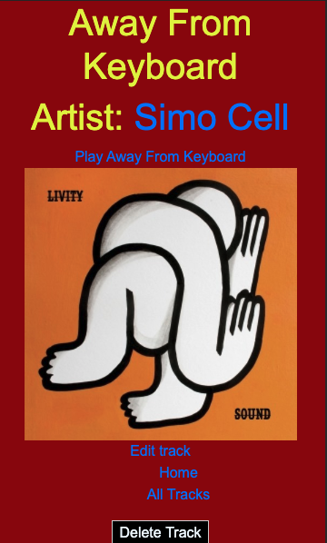
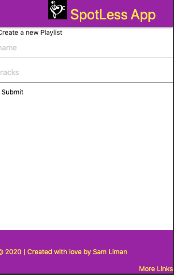

ABOUT ME
Hiya! I'm Sam, a Software Engineer living in Denver, Colorado.
People are frequently surprised to hear that I am a second-generation native to such a colorful state. Until
they get to know me. I am drawn towards a myriad of creative endeavors, including photography, writing,
programming, and therapeutic massage, to name a few.
This diversity is reflected in my musical tastes, as well. I was raised on bands like The Beatles, Pearl Jam,
and Metallica; and, though today I primarily listen to music that would be best described as "melodic
electronic", my preferences remain quite diverse. For example Jacques Greene, Objekt, or Christian Löffler.
I began working with computers in 2015 as an 'IT Guy', moving back to my hometown, Steamboat Springs,
Colorado, to pursue this opportunity. After 4 years in the field, I felt stuck, and that I needed to expand
my skill set more substantially than I was able to by working in positions which were based on waiting for
things to break. This is what compelled me to learn software development. To move to what feels like "the
other side" of the computer. The skills I shaped while working in IT have proven invaluable to me as a
software engineer, and I am excited for the opportunity to exercise them within my creativity as a software
developer.
My programming skills include: JavaScript (ES6), React, Python, HTML5, SQL, NoSQL,
SCSS/CSS, Materialize, Bootstrap, and more, as well as the ability to learn any new language quickly.
PROJECTS
I built the projects below to help me learn the languages and frameworks that I used in building each of them.
Beatless
Beatless
HTML5, NodeJS, ExpressJS, EJS, CSS, and MongoDB. Deployed using Heroku. 1 week.
This was the first web application I ever built. Beatless was a very simple music sharing application,
allowing a user to log in to a specific profile and upload links to songs to share with others. If
there is a link to an image shared as well, the image will have that link attached to it on the share
page.
This project demonstrated to me just how essential real-time, responsive frameworks like React, Vue,
and Angular have become to the way we use the internet today.
Spotless
Spotless
My original goal for this app was to create to create a basic radio app using machine learning, which would be able to offer users new tracks that they would like.